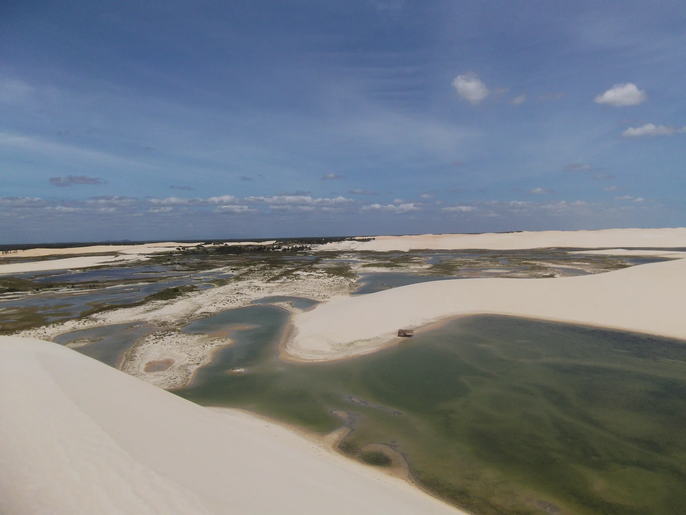

Entre dunas
Horizontes de areia, paradas para fotografar e tempo para observar as formas que o vento desenha.
Quero explorar
Entre a areia e o céu, encontre
um tempo só seu.
Dunas, lagoas e caminhos de areia.
Deixe a paisagem conduzir o seu dia.
Escolha o que quer viver em Jericoacoara.
Comece a planejarUma paisagem aberta, desenhada pelo vento. Entre as dunas e a vila, Jericoacoara convida a trocar a rotina por dias ao ar livre.
A Turun Jeri nasce dessa ideia: escolher os caminhos com calma e deixar espaço para aproveitar cada parada.
Encontre seu ritmoEscolha o começo da sua viagem.
Horizontes de areia, paradas para fotografar e tempo para observar as formas que o vento desenha.
Quero explorarUm mergulho, uma pausa à sombra e uma tarde para aproveitar sem olhar o relógio.
Quero desacelerarCaminhar pelas ruas de areia e terminar o dia acompanhando a mudança de luz à beira-mar.
Quero ficar maisEscolha uma data, o tamanho do grupo e o que mais combina com você.
Descanso nas lagoas, paisagens de dunas ou uma caminhada pela vila.
Gere um resumo para copiar e usar no seu planejamento.
Conte como imagina sua viagem.
O próximo horizonte começa aqui.
Agência fictícia · projeto demonstrativo.
Sem envio de dados ou confirmação de reservas.
Sim. Selecione “Quero conhecer um pouco de tudo” para incluir essa intenção no seu resumo.
Este site é demonstrativo. O planejador cria um resumo local, mas não realiza reservas, pagamentos ou envio de dados.